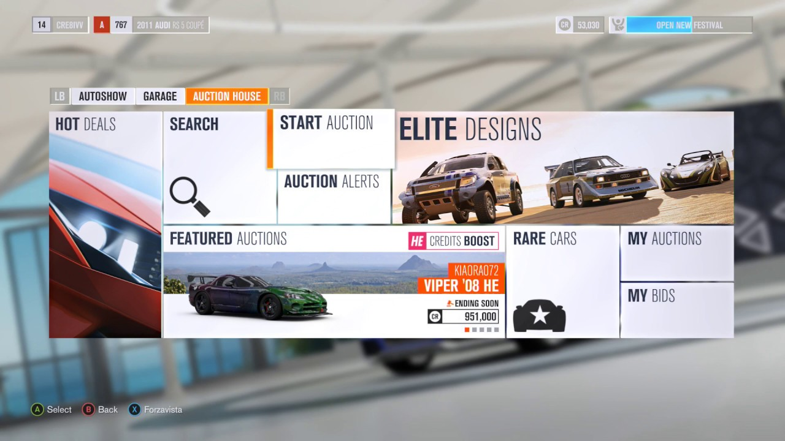

After enjoying the fuck out of FH2, when I heard FH3 was coming out I was literally counting down the days till its launch. I asked my mother to get the ultimate version because I didn't want to have to bother buying the individual DLCs separately later on. I wanted the premium FH3 experience. I must say, this game surpassed FH2 in almost every regard; so nostalgia aside I think FH3 was actually an improvement to FH2 - something you don't see too often in this day and age, ex. FH5 was a step down from FH4 and FH4 was a step down from FH3; and although I have yet to play FH6 (I seriously doubt I'll ever give it a try), after watching a few clips of it, I'm convinced that it isn't a huge improvement from FH5. So after FH3 the sequels just kept getting worse and worse -in my opinion at least.
My favorite new feature was the auction house system, it made the game feel so much more alive to give it a player to player economy. Sometimes I'd log on just to see if I could snag a good deal in the auction house.
